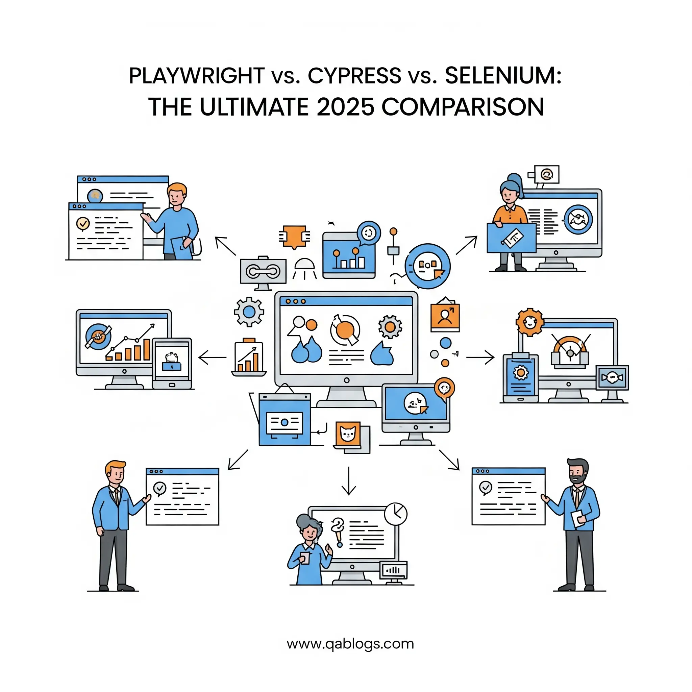

Playwright vs. Cypress vs. Selenium: The Ultimate 2025 Comparison

Key Takeaways
- Playwright offers superior performance and multi-browser support with 2-3x faster execution than Selenium.
- Cypress excels in developer experience and frontend testing with real-time debugging capabilities.
- Selenium remains the most mature framework with extensive language support and enterprise adoption.
- Choose Playwright for modern applications requiring comprehensive testing and mobile capabilities.
- Consider team expertise, project requirements, and long-term strategy when selecting a framework.
The landscape of web automation testing has evolved dramatically over the past few years, with modern frameworks challenging traditional approaches and redefining what's possible in quality assurance. As QA professionals navigate an increasingly complex digital ecosystem, choosing the right automation testing framework has become more critical than ever.
In 2025, three frameworks dominate the conversation: Selenium, the veteran with proven reliability; Cypress, the developer-friendly innovator; and Playwright, Microsoft's powerful newcomer that's rapidly gaining traction. Each offers unique advantages and addresses different pain points in the testing workflow.
With organizations demanding faster release cycles, improved test reliability, and better developer experience, understanding the strengths and limitations of these frameworks isn't just helpful—it's essential for making informed decisions that can impact your entire testing strategy.
Understanding the Contenders
Selenium: The Time-Tested Foundation
Selenium has been the cornerstone of web automation testing since 2004, establishing itself as the industry standard through two decades of continuous evolution. As an open-source framework, Selenium supports multiple programming languages including Java, Python, C#, Ruby, and JavaScript, making it accessible to diverse development teams.
Core Architecture:Selenium operates through the WebDriver protocol, which communicates with browsers via their native drivers. This architecture provides excellent cross-browser compatibility but introduces additional complexity in setup and maintenance.
Key Strengths:- Mature ecosystem with extensive community support and documentation
- Language flexibility supporting virtually any programming language
- Cross-browser compatibility across all major browsers
- Grid capabilities for parallel execution across multiple environments
- Enterprise adoption with proven scalability in large organizations
Cypress: The Developer Experience Champion
Launched in 2017, Cypress revolutionized frontend testing by prioritizing developer experience and addressing many pain points associated with traditional Selenium-based testing. Built specifically for modern web applications, Cypress runs directly in the browser, providing unique debugging capabilities and real-time test execution visibility.
Core Architecture:Cypress executes tests within the browser's context, eliminating the need for external drivers. This approach enables direct access to application objects and provides superior debugging capabilities.
Key Strengths:- Exceptional developer experience with intuitive API and excellent documentation
- Real-time browser preview showing test execution as it happens
- Built-in waiting mechanisms that automatically handle dynamic content
- Time-travel debugging allowing developers to see exactly what happened at each step
- Modern JavaScript support with ES6+ features and async/await patterns
Playwright: The Modern Powerhouse
Microsoft's Playwright, released in 2020, represents the latest evolution in web automation testing. Built by the team behind Puppeteer, Playwright addresses many limitations of existing frameworks while providing powerful features for modern web applications.
Core Architecture:Playwright uses a single API to control multiple browser engines (Chromium, Firefox, and WebKit) through their respective debugging protocols. This approach provides fast execution and reliable automation across different browsers.
Key Strengths:- Multi-browser support with consistent API across Chromium, Firefox, and WebKit
- Auto-waiting capabilities that eliminate flaky tests caused by timing issues
- Network interception for advanced testing scenarios
- Mobile testing support with device emulation and real mobile browser testing
- Parallel execution built-in from the ground up
Feature-by-Feature Comparison
Browser Support and Compatibility
Selenium offers the broadest browser support, including legacy browsers like Internet Explorer. Its WebDriver protocol is implemented by all major browsers, ensuring consistent behavior across different environments.
Cypress primarily focuses on Chromium-based browsers (Chrome, Edge) with Firefox support added in recent versions. While Safari testing is possible through WebKit, it's not as robust as other browsers.
Playwright provides excellent support for Chromium, Firefox, and WebKit (Safari) through a unified API. The framework's architecture ensures consistent behavior across all supported browsers.
Setup and Configuration
Selenium requires significant setup effort, including:
- Installing browser drivers for each browser
- Configuring WebDriver instances
- Managing driver versions and browser compatibility
- Setting up test runners and reporting frameworks
Cypress offers a streamlined setup process:
- Simple npm installation
- Automatic browser detection
- Built-in test runner with GUI
- Minimal configuration required for basic testing
Playwright provides the most straightforward setup:
- Single npm install includes all browser binaries
- Automatic browser management
- Built-in test runner and reporting
- Zero configuration for most use cases
Performance and Speed
Selenium performance depends heavily on implementation and infrastructure:
- Network latency affects execution speed
- WebDriver communication overhead
- Grid setup can improve parallel execution
- Performance varies significantly across different language bindings
Cypress offers consistent performance characteristics:
- Direct browser execution eliminates network latency
- Automatic screenshot and video capture may impact performance
- Limited parallel execution capabilities in open-source version
- Generally faster for smaller test suites
Playwright delivers superior performance:
- Direct browser protocol communication
- Built-in parallel execution across multiple browsers
- Efficient resource utilization
- Fastest execution times in most benchmarks
Language and Technology Support
Selenium supports the widest range of programming languages:
- Java, Python, C#, Ruby, JavaScript, Kotlin, Scala
- Extensive ecosystem with language-specific extensions
- Integration with various testing frameworks
- Flexibility to use existing team expertise
Cypress is JavaScript-focused:
- Native JavaScript/TypeScript support
- Modern ES6+ features and async/await
- Limited to JavaScript ecosystem
- May require team upskilling for non-JavaScript teams
Playwright supports multiple languages:
- JavaScript/TypeScript, Python, Java, C#
- Consistent API across all supported languages
- Growing ecosystem with language-specific tooling
- Easier adoption for teams with diverse language preferences
Real-World Testing Scenarios
E-commerce Application Testing
Consider testing a modern e-commerce platform with dynamic product listings, user authentication, and payment processing:
Selenium Approach:// Selenium Java example
WebDriver driver = new ChromeDriver();
driver.get("https://example-shop.com");
WebElement searchBox = driver.findElement(By.id("search"));
searchBox.sendKeys("laptop");
searchBox.submit();
WebDriverWait wait = new WebDriverWait(driver, 10);
wait.until(ExpectedConditions.presenceOfElementLocated(By.className("product-item")));
// Cypress JavaScript example
cy.visit('https://example-shop.com');
cy.get('#search').type('laptop');
cy.get('#search').type('{enter}');
cy.get('.product-item').should('be.visible');
// Playwright JavaScript example
await page.goto('https://example-shop.com');
await page.fill('#search', 'laptop');
await page.press('#search', 'Enter');
await page.waitForSelector('.product-item');
Mobile-First Application Testing
For responsive web applications requiring mobile testing:
- Selenium requires additional setup with mobile emulation or real device testing through Appium integration.
- Cypress provides basic viewport testing but limited mobile-specific features.
- Playwright offers comprehensive mobile testing with device emulation, real mobile browsers, and mobile-specific assertions.
Performance Metrics and Benchmarks
Based on community benchmarks and real-world usage data:
Test Execution Speed:- Playwright: 2-3x faster than Selenium for equivalent test suites
- Cypress: 1.5-2x faster than Selenium for frontend-focused tests
- Selenium: Baseline performance, varies significantly by implementation
- Playwright: 80-90% reduction in flaky tests due to auto-waiting
- Cypress: 60-70% reduction with built-in retry mechanisms
- Selenium: High flakiness without proper wait strategies
- Playwright: Most efficient memory and CPU usage
- Cypress: Moderate resource usage with video recording overhead
- Selenium: Highest resource usage due to external driver communication
Cost and Licensing Considerations
Open Source vs. Commercial Features
Selenium is completely open source with no commercial licensing requirements. However, additional tools for reporting, parallel execution, and cloud testing often require commercial licenses.
Cypress offers open-source core functionality with commercial features:
- Cypress Dashboard for parallel execution, test analytics, and CI/CD integration
- Pricing starts at $75/month for teams
- Essential features remain free for most use cases
Playwright is fully open source with no commercial licensing restrictions:
- All features available in open-source version
- Microsoft's backing ensures long-term support
- No hidden costs for advanced features
Infrastructure and Maintenance Costs
Selenium often requires significant infrastructure investment:
- Selenium Grid setup and maintenance
- Browser driver management
- Third-party tools for reporting and analytics
- Higher maintenance overhead
Cypress reduces infrastructure complexity:
- Simpler CI/CD integration
- Built-in parallelization with Dashboard
- Lower maintenance requirements
- Potential cost savings in commercial version
Playwright offers the lowest total cost of ownership:
- Minimal infrastructure requirements
- Built-in parallel execution
- Automated browser management
- Reduced maintenance overhead
Integration and Ecosystem
CI/CD Pipeline Integration
Selenium integrations are well-established:
- Jenkins, GitLab CI, GitHub Actions, Azure DevOps
- Extensive plugin ecosystem
- Docker containers and Kubernetes support
- Cloud testing platforms (BrowserStack, Sauce Labs)
Cypress provides modern CI/CD capabilities:
- Native GitHub Actions integration
- Docker official images
- Cypress Dashboard for CI analytics
- Growing ecosystem of plugins and extensions
Playwright offers cutting-edge CI/CD features:
- GitHub Actions integration out-of-the-box
- Docker containers with all browsers included
- Built-in test reporting and artifacts
- Azure DevOps native integration
Reporting and Analytics
Selenium relies on external reporting tools:
- Allure, ExtentReports, TestNG reports
- Custom reporting solutions required
- Integration complexity varies by tool choice
Cypress provides built-in reporting:
- Mochawesome reports included
- Cypress Dashboard for advanced analytics
- Screenshot and video capture automatic
- Plugin ecosystem for custom reporting
Playwright includes comprehensive reporting:
- HTML reports with trace viewer
- Built-in screenshot and video capture
- Detailed test execution traces
- Integration with popular reporting tools
Making the Right Choice: Decision Framework
Choose Selenium When:
- Working with legacy applications or browsers
- Large, established teams with existing Selenium expertise
- Multi-language development environment requirements
- Extensive cross-browser testing across older browser versions
- Budget constraints prevent commercial tool adoption
Choose Cypress When:
- Frontend-focused testing with modern web applications
- JavaScript/TypeScript development teams
- Rapid prototyping and development cycles
- Developer experience is a primary concern
- Limited cross-browser testing requirements
Choose Playwright When:
- Modern web applications requiring comprehensive testing
- Multi-browser testing is essential
- Performance and reliability are critical
- Mobile testing capabilities are required
- Team is open to adopting new technologies
Migration Strategies and Best Practices
Selenium to Playwright Migration
Organizations migrating from Selenium to Playwright should consider:
- Gradual migration approach: Start with new test cases in Playwright
- Team training: Invest in Playwright education for existing team members
- Test suite analysis: Identify high-value tests for priority migration
- Infrastructure updates: Leverage Playwright's simplified setup requirements
Cypress to Playwright Migration
Teams moving from Cypress to Playwright can:
- Leverage similar syntax: Many Cypress patterns translate directly
- Expand browser coverage: Utilize Playwright's multi-browser capabilities
- Improve performance: Take advantage of Playwright's parallel execution
- Enhance mobile testing: Implement comprehensive mobile test coverage
Future Outlook and Emerging Trends
Industry Trends Shaping Testing Framework Evolution
The testing landscape continues to evolve with several key trends:
AI-Powered Testing: Machine learning integration for intelligent test generation, self-healing tests, and predictive analytics is becoming more prevalent across all frameworks.
Visual Testing Integration: Automated visual regression testing capabilities are being built into core frameworks rather than relying solely on third-party tools.
Cloud-Native Testing: Frameworks are increasingly designed for cloud-first execution with better containerization and serverless testing capabilities.
Low-Code/No-Code Testing: Visual test builders and record-and-playback tools are becoming more sophisticated, though they complement rather than replace code-based testing.
Framework-Specific Roadmaps
Selenium continues evolving with:
- Selenium 4+ WebDriver BiDi protocol adoption
- Improved browser compatibility and performance
- Enhanced cloud testing integrations
- Better mobile testing capabilities
Cypress is expanding with:
- Improved cross-browser support
- Enhanced component testing capabilities
- Better mobile testing features
- Continued focus on developer experience
Playwright is advancing rapidly with:
- Enhanced testing capabilities for modern web technologies
- Improved mobile testing features
- Better CI/CD integrations
- Expanded language support
Conclusion
The choice between Playwright, Cypress, and Selenium isn't just about features—it's about aligning your testing strategy with your organization's goals, team capabilities, and technical requirements. Each framework excels in different scenarios, and the "best" choice depends on your specific context.
For organizations prioritizing cutting-edge performance, comprehensive browser support, and modern testing capabilities, Playwright represents the future of web automation testing. Its rapid development pace and Microsoft's backing suggest it will continue leading innovation in the testing space.
Cypress remains the optimal choice for JavaScript-focused teams prioritizing developer experience and frontend testing efficiency. Its intuitive API and excellent debugging capabilities make it ideal for rapid development cycles.
Selenium continues to serve organizations with complex, multi-language environments and extensive legacy system requirements. Its maturity and ecosystem depth provide stability for enterprise-scale testing initiatives.
As we progress through 2025, the testing landscape will likely see continued convergence of features across frameworks, with each adopting successful patterns from others. The key is to evaluate your current needs while considering long-term strategic goals and team capabilities.
Ready to modernize your testing approach? Start by conducting a small pilot project with your preferred framework choice. Evaluate the developer experience, performance characteristics, and integration capabilities within your existing workflow. The investment in choosing the right testing framework today will pay dividends in improved software quality, faster release cycles, and enhanced team productivity for years to come.
Want to stay updated on the latest testing framework developments and best practices? Subscribe to QA Blogs for in-depth analysis, practical tutorials, and expert insights from the world of quality assurance.
Join Our Community of QA Professionals
Get exclusive access to in-depth articles, testing strategies, and industry insights. Stay ahead of the curve with our expert-curated content delivered straight to your inbox.
Nikunj Mistri
Founder, QA Blogs
About the Author